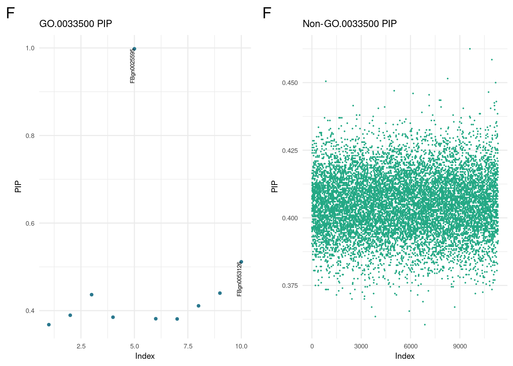
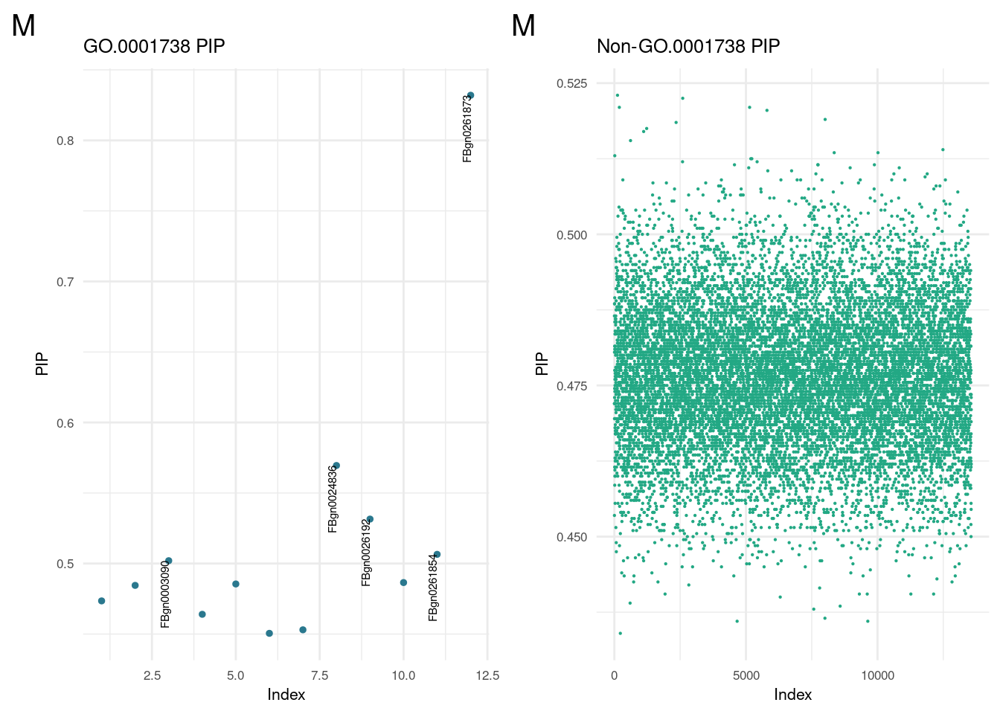
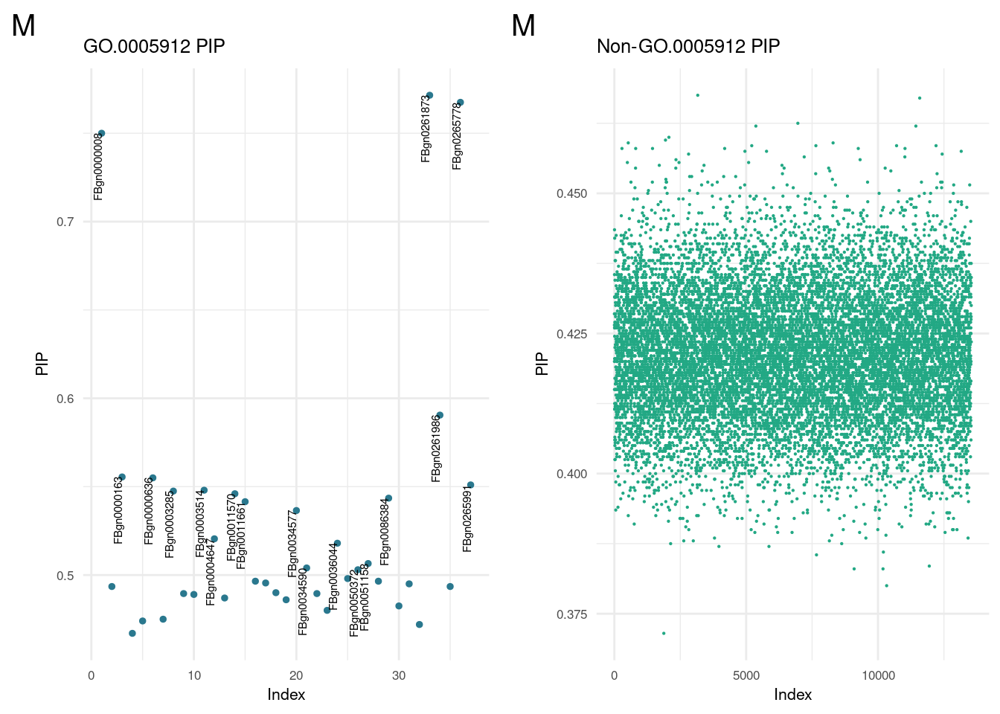
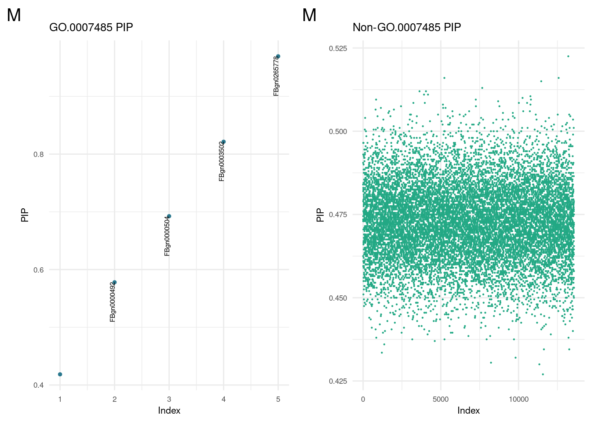
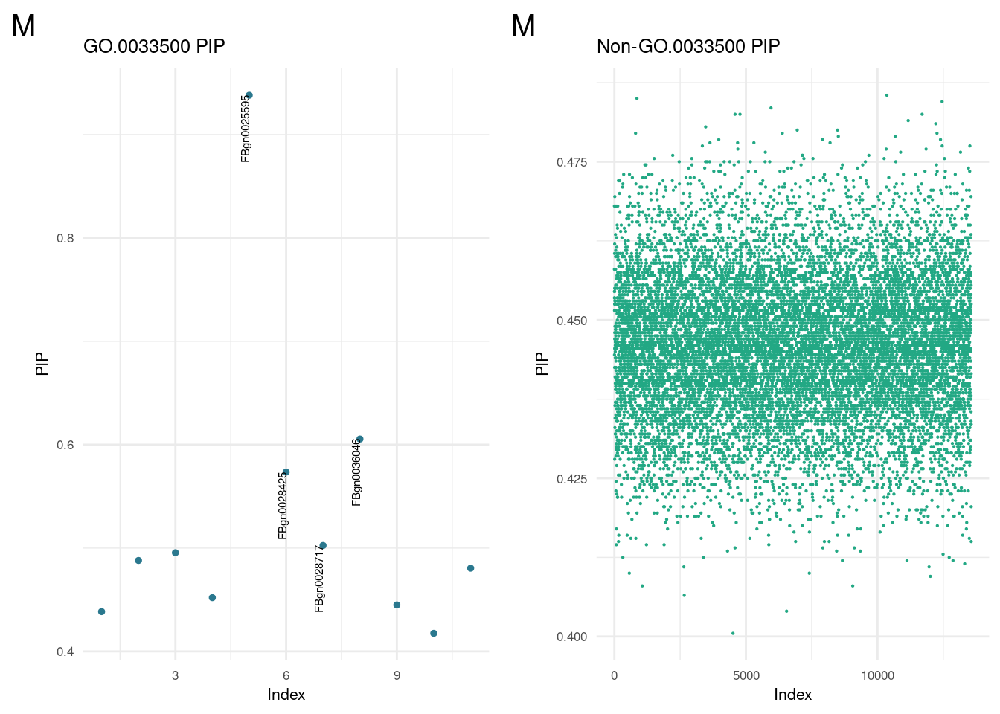
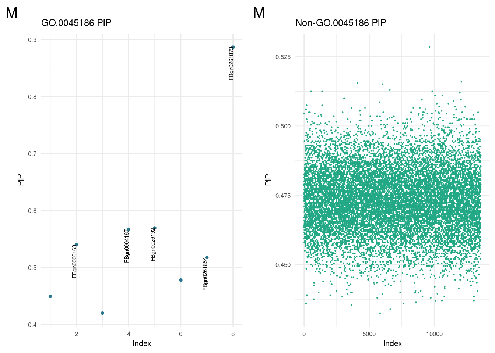

GObayesC Report
Last updated: 2023-12-12
Checks: 7 0
Knit directory: dgrp-starve/
This reproducible R Markdown analysis was created with workflowr (version 1.7.1). The Checks tab describes the reproducibility checks that were applied when the results were created. The Past versions tab lists the development history.
Great! Since the R Markdown file has been committed to the Git repository, you know the exact version of the code that produced these results.
Great job! The global environment was empty. Objects defined in the global environment can affect the analysis in your R Markdown file in unknown ways. For reproduciblity it’s best to always run the code in an empty environment.
The command set.seed(20221101) was run prior to running the code in the R Markdown file. Setting a seed ensures that any results that rely on randomness, e.g. subsampling or permutations, are reproducible.
Great job! Recording the operating system, R version, and package versions is critical for reproducibility.
Nice! There were no cached chunks for this analysis, so you can be confident that you successfully produced the results during this run.
Great job! Using relative paths to the files within your workflowr project makes it easier to run your code on other machines.
Great! You are using Git for version control. Tracking code development and connecting the code version to the results is critical for reproducibility.
The results in this page were generated with repository version 4db970c. See the Past versions tab to see a history of the changes made to the R Markdown and HTML files.
Note that you need to be careful to ensure that all relevant files for the analysis have been committed to Git prior to generating the results (you can use wflow_publish or wflow_git_commit). workflowr only checks the R Markdown file, but you know if there are other scripts or data files that it depends on. Below is the status of the Git repository when the results were generated:
Ignored files:
Ignored: .snakemake/
Ignored: code/methodComp/bglr/err-bglr-f.5381.err
Ignored: code/methodComp/bglr/err-bglr-m.5382.err
Ignored: code/methodComp/m/meth-m.4676.err
Ignored: code/methodComp/m/meth-m.4685.err
Ignored: code/methodComp/method-f.4751.out
Ignored: data/fb/
Ignored: data/snake/
Ignored: snake/.snakemake/
Ignored: snake/GOfile.yaml
Ignored: snake/ReadMe.md
Ignored: snake/Snakefile.yaml
Ignored: snake/bayesCheck.R
Ignored: snake/bayesTest.Rds
Ignored: snake/binner2.R
Ignored: snake/code/misc/
Ignored: snake/data/
Ignored: snake/datafile.yaml
Ignored: snake/dgrp.yaml
Ignored: snake/f_file.yaml
Ignored: snake/goNames.sh
Ignored: snake/goPost/
Ignored: snake/gofig.yaml
Ignored: snake/gospace.R
Ignored: snake/h2_synth.R
Ignored: snake/labMake.R
Ignored: snake/logs/
Ignored: snake/meta.sh
Ignored: snake/metaList
Ignored: snake/newlines
Ignored: snake/note1
Ignored: snake/pipelines/
Ignored: snake/pipoff.R
Ignored: snake/rawHits
Ignored: snake/s1.sh
Ignored: snake/s2.sh
Ignored: snake/s3.sh
Ignored: snake/slurm/
Ignored: snake/smake.sbatch
Ignored: snake/snubnose.sbatch
Ignored: snake/space.yaml
Ignored: snake/sparsecomp.R
Ignored: snake/sprase/
Ignored: snake/srfile.yaml
Ignored: snake/temp.Rds
Ignored: snake/temp9/
Ignored: snake/temporaire-rewrite.R
Ignored: snake/trimHits
Ignored: snake/vavrfile.yaml
Ignored: snake/vavrmake
Ignored: snake/zz_lost/
Ignored: zz_lost/
Untracked files:
Untracked: analysis/allotter.R
Untracked: analysis/old_index.Rmd.Rmd
Untracked: forester.R
Untracked: malegofind.R
Untracked: pippinRMDbackup.R
Untracked: snake/code/binner.R
Untracked: snake/code/combine_GO.R
Untracked: snake/code/dataFinGO.R
Untracked: snake/code/datafile.yaml
Untracked: snake/code/filterNcombine_GO.R
Untracked: snake/code/filter_GO.R
Untracked: snake/code/go/
Untracked: snake/code/idTEMP.R
Untracked: snake/code/imstuff.R
Untracked: snake/code/method/bayesHome.R
Untracked: snake/code/method/multiplotGO.Rmd
Untracked: snake/code/srfile.yaml
Unstaged changes:
Modified: analysis/Method/BayesC.Rmd
Modified: analysis/bigGO.Rmd
Modified: snake/code/method/bayesGO.R
Modified: snake/code/method/goFish.R
Modified: snake/code/method/varbvs.R
Note that any generated files, e.g. HTML, png, CSS, etc., are not included in this status report because it is ok for generated content to have uncommitted changes.
These are the previous versions of the repository in which changes were made to the R Markdown (analysis/pippin.Rmd) and HTML (docs/pippin.html) files. If you’ve configured a remote Git repository (see ?wflow_git_remote), click on the hyperlinks in the table below to view the files as they were in that past version.
| File | Version | Author | Date | Message |
|---|---|---|---|---|
| Rmd | 4db970c | nklimko | 2023-12-12 | wflow_publish(“analysis/pippin.Rmd”) |
| html | 959eff1 | nklimko | 2023-12-12 | Build site. |
| Rmd | f1b715f | nklimko | 2023-12-12 | wflow_publish(“analysis/pippin.Rmd”) |
| html | 43af6b9 | nklimko | 2023-12-05 | Build site. |
| Rmd | d1987b3 | nklimko | 2023-12-05 | wflow_publish(“analysis/pippin.Rmd”) |
load('snake/data/topTables.Rdata')
options(knitr.kable.NA = '')Summary
We wanted to ensure that the genes of interest found multiple times across GO terms were significant in our models by looking at their posterior inclusion probability in each subset. The cutoff for associated genes was set to 0.5 while the cutoff for non-associated genes was set to 0.7. We then tallied the filtered genes as subsets of their individual distribution and then altogether to find genes that appeared scarcely in both.
Our findings here are mostly consistent with initial findings. Notably, the Adipokinetic hormone Receptor(AkhR) is a top hit while the hormone itself(Akh) is not found in either sex.
Female Genes
kable(fGO_top, caption= 'GO genes', 'simple') %>%
kable_styling(full_width = FALSE, position = "float_left")Warning in kable_styling(., full_width = FALSE, position = "float_left"):
Please specify format in kable. kableExtra can customize either HTML or LaTeX
outputs. See https://haozhu233.github.io/kableExtra/ for details.| gene | count | name |
|---|---|---|
| FBgn0025595 | 8 | AkhR |
| FBgn0000575 | 7 | emc |
| FBgn0262738 | 4 | norpA |
| FBgn0003205 | 4 | Ras85D |
| FBgn0003731 | 4 | Egfr |
| FBgn0003463 | 3 | sog |
| FBgn0003719 | 3 | tld |
| FBgn0036449 | 3 | bmm |
kable(fNON_top, caption= 'non-GO genes', 'simple') %>%
kable_styling(full_width = FALSE, position = "float_right")Warning in kable_styling(., full_width = FALSE, position = "float_right"):
Please specify format in kable. kableExtra can customize either HTML or LaTeX
outputs. See https://haozhu233.github.io/kableExtra/ for details.| gene | count | name |
|---|---|---|
| FBgn0025595 | 8 | AkhR |
| FBgn0000575 | 7 | emc |
| FBgn0262738 | 4 | norpA |
| FBgn0003731 | 4 | Egfr |
| FBgn0003463 | 3 | sog |
kable(fALL_topGenes, caption = 'Top Female Genes', "simple")| gene | count | name |
|---|---|---|
| FBgn0025595 | 16 | AkhR |
| FBgn0000575 | 14 | emc |
| FBgn0262738 | 8 | norpA |
| FBgn0003731 | 8 | Egfr |
| FBgn0003463 | 6 | sog |
| FBgn0003205 | 4 | Ras85D |
| FBgn0004635 | 4 | rho |
| FBgn0039114 | 4 | Lsd-1 |
| FBgn0003218 | 4 | rdgB |
| FBgn0026207 | 3 | mbo |
| FBgn0003719 | 3 | tld |
| FBgn0036449 | 3 | bmm |
Male Genes
kable(mGO_top, caption= 'GO genes', 'simple') %>%
kable_styling(full_width = FALSE, position = "float_left")Warning in kable_styling(., full_width = FALSE, position = "float_left"):
Please specify format in kable. kableExtra can customize either HTML or LaTeX
outputs. See https://haozhu233.github.io/kableExtra/ for details.| gene | count | name |
|---|---|---|
| FBgn0261873 | 9 | sdt |
| FBgn0261854 | 6 | aPKC |
| FBgn0025595 | 6 | AkhR |
| FBgn0026192 | 5 | par-6 |
| FBgn0265778 | 5 | PDZ-GEF |
| FBgn0036046 | 5 | Ilp2 |
| FBgn0086687 | 4 | Desat1 |
| FBgn0011661 | 3 | Moe |
| FBgn0036449 | 3 | bmm |
| FBgn0000163 | 3 | baz |
| FBgn0003205 | 3 | Ras85D |
kable(mNON_top, caption= 'non-GO genes', 'simple') %>%
kable_styling(full_width = FALSE, position = "float_right")Warning in kable_styling(., full_width = FALSE, position = "float_right"):
Please specify format in kable. kableExtra can customize either HTML or LaTeX
outputs. See https://haozhu233.github.io/kableExtra/ for details.| gene | count | name |
|---|---|---|
| FBgn0261873 | 9 | sdt |
| FBgn0025595 | 6 | AkhR |
| FBgn0265778 | 5 | PDZ-GEF |
kable(mALL_topGenes, caption = 'Top Female Genes', "simple")| gene | count | name |
|---|---|---|
| FBgn0261873 | 18 | sdt |
| FBgn0025595 | 12 | AkhR |
| FBgn0265778 | 10 | PDZ-GEF |
| FBgn0261854 | 6 | aPKC |
| FBgn0036046 | 6 | Ilp2 |
| FBgn0086687 | 6 | Desat1 |
| FBgn0026192 | 5 | par-6 |
| FBgn0032264 | 4 | Lip4 |
| FBgn0020386 | 4 | Pdk1 |
| FBgn0033205 | 4 | CG2064 |
| FBgn0011661 | 3 | Moe |
| FBgn0036449 | 3 | bmm |
| FBgn0000163 | 3 | baz |
| FBgn0003205 | 3 | Ras85D |
Posterior Inclusion Of Probability Plots
Below are the PIP plots from the top GO terms separated by sex. These were made on the full model( all 198 lines, no CV) rather than cross validation for prediction. The left column contains PIP plots for the distribution associated with the GO-related genes, while the right column contains PIP plot for all other genes. Each row is a GO term.
Female Plots
sex <- 'f'
plotList <- list.files(path=paste0('snake/data/go/26_pip/sex', sex), full.names = TRUE)
ggF <- lapply(plotList, readRDS)
for(i in 1:(length(ggF)/2)){
b <- 2*i
a <- b - 1
print(plot_grid(ggF[[a]], ggF[[b]], ncol=2))
}
| Version | Author | Date |
|---|---|---|
| 43af6b9 | nklimko | 2023-12-05 |
| Version | Author | Date |
|---|---|---|
| 43af6b9 | nklimko | 2023-12-05 |
| Version | Author | Date |
|---|---|---|
| 43af6b9 | nklimko | 2023-12-05 |
| Version | Author | Date |
|---|---|---|
| 43af6b9 | nklimko | 2023-12-05 |
| Version | Author | Date |
|---|---|---|
| 43af6b9 | nklimko | 2023-12-05 |
| Version | Author | Date |
|---|---|---|
| 43af6b9 | nklimko | 2023-12-05 |
| Version | Author | Date |
|---|---|---|
| 43af6b9 | nklimko | 2023-12-05 |
| Version | Author | Date |
|---|---|---|
| 43af6b9 | nklimko | 2023-12-05 |
| Version | Author | Date |
|---|---|---|
| 43af6b9 | nklimko | 2023-12-05 |
| Version | Author | Date |
|---|---|---|
| 43af6b9 | nklimko | 2023-12-05 |
| Version | Author | Date |
|---|---|---|
| 43af6b9 | nklimko | 2023-12-05 |
| Version | Author | Date |
|---|---|---|
| 43af6b9 | nklimko | 2023-12-05 |
| Version | Author | Date |
|---|---|---|
| 43af6b9 | nklimko | 2023-12-05 |
| Version | Author | Date |
|---|---|---|
| 43af6b9 | nklimko | 2023-12-05 |
| Version | Author | Date |
|---|---|---|
| 43af6b9 | nklimko | 2023-12-05 |
| Version | Author | Date |
|---|---|---|
| 43af6b9 | nklimko | 2023-12-05 |
| Version | Author | Date |
|---|---|---|
| 43af6b9 | nklimko | 2023-12-05 |
| Version | Author | Date |
|---|---|---|
| 43af6b9 | nklimko | 2023-12-05 |

| Version | Author | Date |
|---|---|---|
| 43af6b9 | nklimko | 2023-12-05 |
| Version | Author | Date |
|---|---|---|
| 43af6b9 | nklimko | 2023-12-05 |
| Version | Author | Date |
|---|---|---|
| 43af6b9 | nklimko | 2023-12-05 |
| Version | Author | Date |
|---|---|---|
| 43af6b9 | nklimko | 2023-12-05 |
| Version | Author | Date |
|---|---|---|
| 43af6b9 | nklimko | 2023-12-05 |
| Version | Author | Date |
|---|---|---|
| 43af6b9 | nklimko | 2023-12-05 |
| Version | Author | Date |
|---|---|---|
| 43af6b9 | nklimko | 2023-12-05 |
| Version | Author | Date |
|---|---|---|
| 43af6b9 | nklimko | 2023-12-05 |
| Version | Author | Date |
|---|---|---|
| 43af6b9 | nklimko | 2023-12-05 |
| Version | Author | Date |
|---|---|---|
| 43af6b9 | nklimko | 2023-12-05 |
| Version | Author | Date |
|---|---|---|
| 43af6b9 | nklimko | 2023-12-05 |
| Version | Author | Date |
|---|---|---|
| 43af6b9 | nklimko | 2023-12-05 |
Male Plots
sex <- 'm'
plotList <- list.files(path=paste0('snake/data/go/26_pip/sex', sex), full.names = TRUE)
ggM <- lapply(plotList, readRDS)
for(i in 1:(length(ggM)/2)){
b <- 2*i
a <- b - 1
print(plot_grid(ggM[[a]], ggM[[b]], ncol=2))
}





| Version | Author | Date |
|---|---|---|
| 959eff1 | nklimko | 2023-12-12 |
| Version | Author | Date |
|---|---|---|
| 959eff1 | nklimko | 2023-12-12 |
| Version | Author | Date |
|---|---|---|
| 959eff1 | nklimko | 2023-12-12 |
| Version | Author | Date |
|---|---|---|
| 959eff1 | nklimko | 2023-12-12 |
| Version | Author | Date |
|---|---|---|
| 959eff1 | nklimko | 2023-12-12 |
| Version | Author | Date |
|---|---|---|
| 959eff1 | nklimko | 2023-12-12 |
sessionInfo()R version 4.1.2 (2021-11-01)
Platform: x86_64-pc-linux-gnu (64-bit)
Running under: Rocky Linux 8.5 (Green Obsidian)
Matrix products: default
BLAS/LAPACK: /opt/ohpc/pub/libs/gnu9/openblas/0.3.7/lib/libopenblasp-r0.3.7.so
locale:
[1] LC_CTYPE=en_US.UTF-8 LC_NUMERIC=C
[3] LC_TIME=en_US.UTF-8 LC_COLLATE=en_US.UTF-8
[5] LC_MONETARY=en_US.UTF-8 LC_MESSAGES=en_US.UTF-8
[7] LC_PAPER=en_US.UTF-8 LC_NAME=C
[9] LC_ADDRESS=C LC_TELEPHONE=C
[11] LC_MEASUREMENT=en_US.UTF-8 LC_IDENTIFICATION=C
attached base packages:
[1] stats graphics grDevices utils datasets methods base
other attached packages:
[1] kableExtra_1.3.4 knitr_1.43 reshape2_1.4.4 melt_1.10.0
[5] ggcorrplot_0.1.4.1 lubridate_1.9.3 forcats_1.0.0 stringr_1.5.0
[9] purrr_1.0.1 readr_2.1.4 tidyr_1.3.0 tibble_3.2.1
[13] tidyverse_2.0.0 scales_1.2.1 viridis_0.6.4 viridisLite_0.4.2
[17] qqman_0.1.9 cowplot_1.1.1 ggplot2_3.4.4 data.table_1.14.8
[21] dplyr_1.1.3 workflowr_1.7.1
loaded via a namespace (and not attached):
[1] Rcpp_1.0.11 svglite_2.1.2 getPass_0.2-2 ps_1.7.5
[5] rprojroot_2.0.3 digest_0.6.33 utf8_1.2.3 plyr_1.8.9
[9] R6_2.5.1 evaluate_0.21 highr_0.10 httr_1.4.7
[13] pillar_1.9.0 rlang_1.1.1 rstudioapi_0.15.0 whisker_0.4.1
[17] callr_3.7.3 jquerylib_0.1.4 rmarkdown_2.23 labeling_0.4.3
[21] webshot_0.5.5 munsell_0.5.0 compiler_4.1.2 httpuv_1.6.12
[25] xfun_0.39 systemfonts_1.0.5 pkgconfig_2.0.3 htmltools_0.5.5
[29] tidyselect_1.2.0 gridExtra_2.3 fansi_1.0.4 calibrate_1.7.7
[33] tzdb_0.4.0 withr_2.5.0 later_1.3.1 MASS_7.3-60
[37] grid_4.1.2 jsonlite_1.8.7 gtable_0.3.4 lifecycle_1.0.3
[41] git2r_0.32.0 magrittr_2.0.3 cli_3.6.1 stringi_1.7.12
[45] cachem_1.0.8 farver_2.1.1 fs_1.6.3 promises_1.2.0.1
[49] xml2_1.3.3 bslib_0.5.0 generics_0.1.3 vctrs_0.6.4
[53] tools_4.1.2 glue_1.6.2 hms_1.1.3 processx_3.8.2
[57] fastmap_1.1.1 yaml_2.3.7 timechange_0.2.0 colorspace_2.1-0
[61] rvest_1.0.3 sass_0.4.7